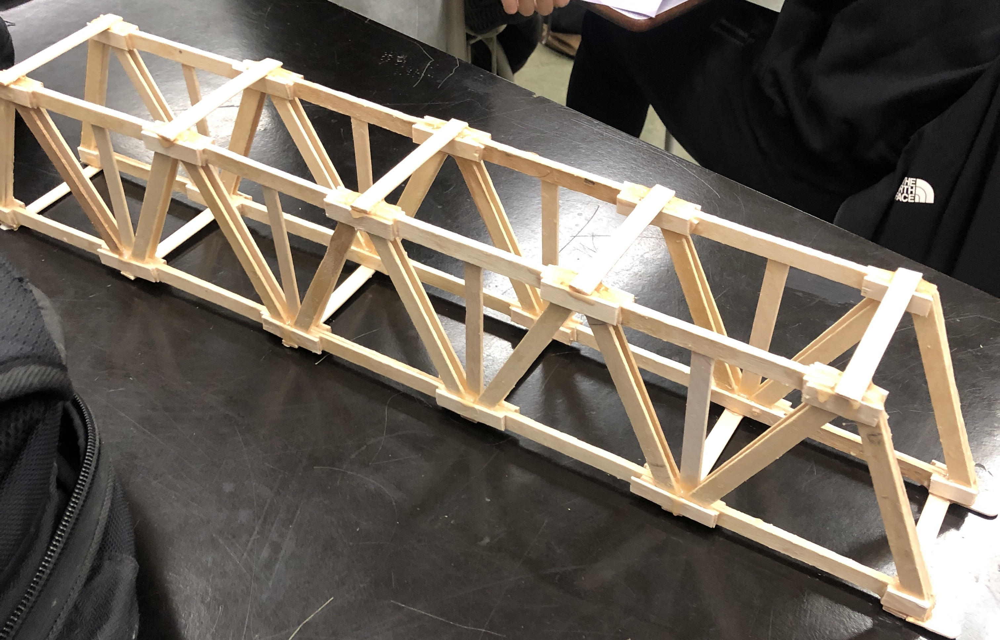
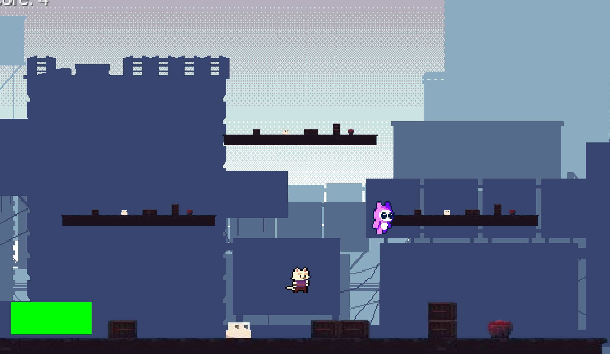
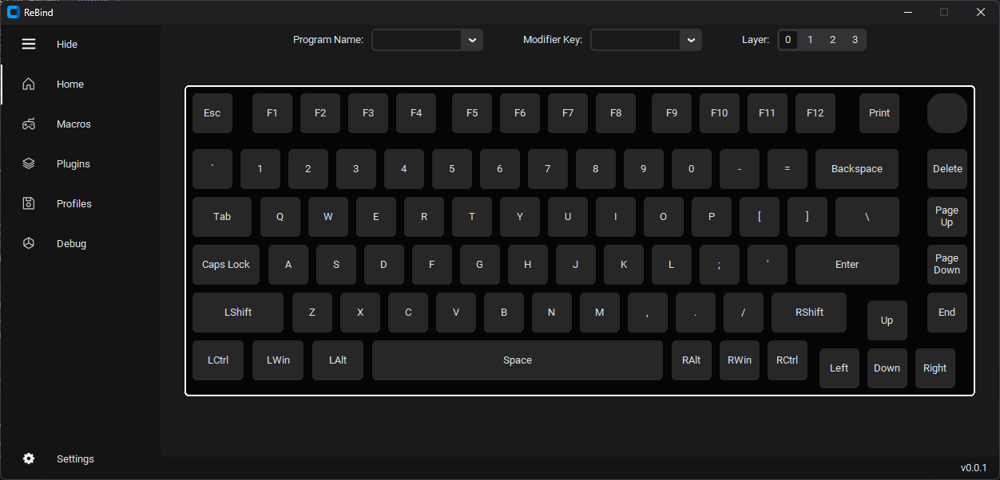

Popsicle Stick Bridge
Designed and constructed a truss-style bridge using popsicle sticks, leveraging structural engineering principles to achieve a load capacity of 149 lbs.

Robotics Project
Engineered and programmed a functional robot with mechanical systems and autonomous capabilities for competitive robotics applications.

Platformer Game
Developed a 2D platformer game with custom-designed physics, level mechanics, and user interaction systems.

Rebind
Built a versatile key-remapping program that integrates user interface design with low-level input handling for enhanced keyboard customization.